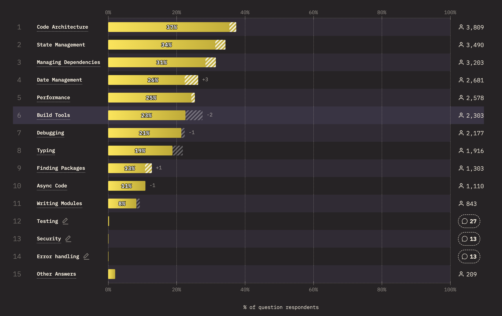
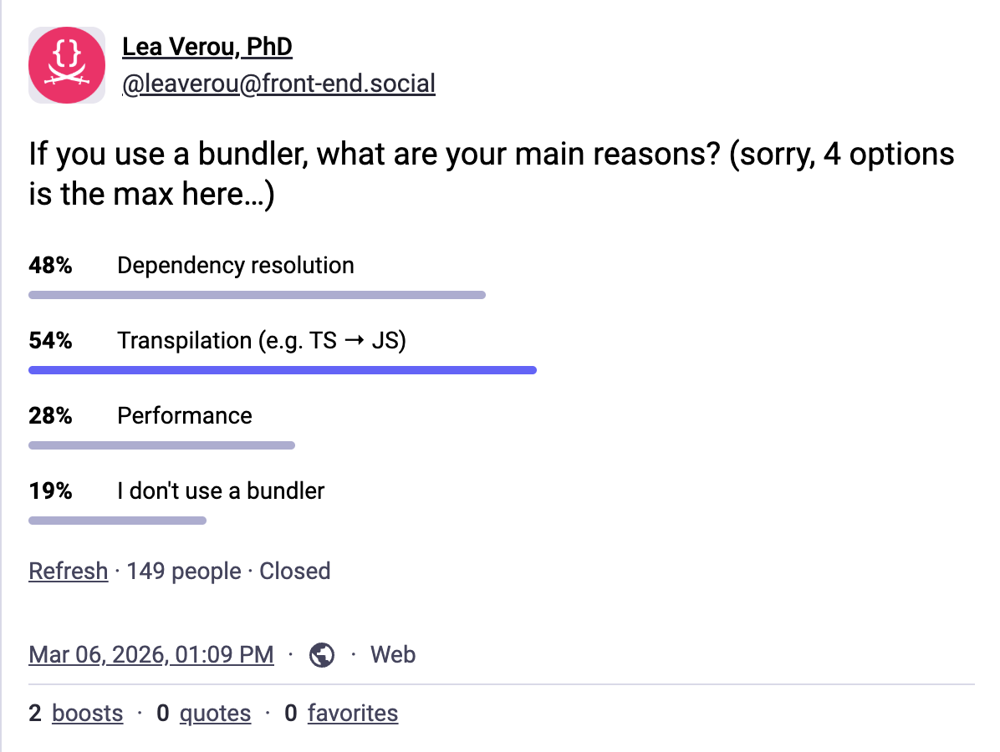
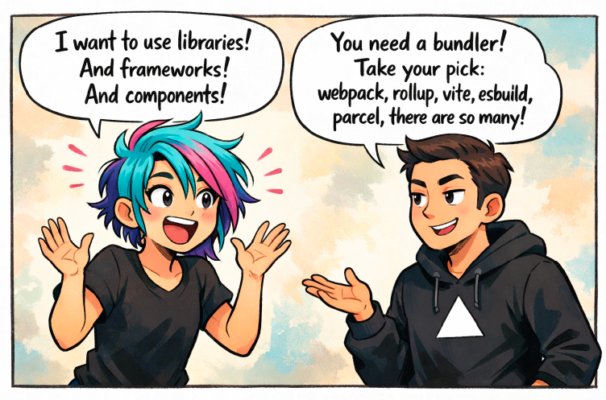
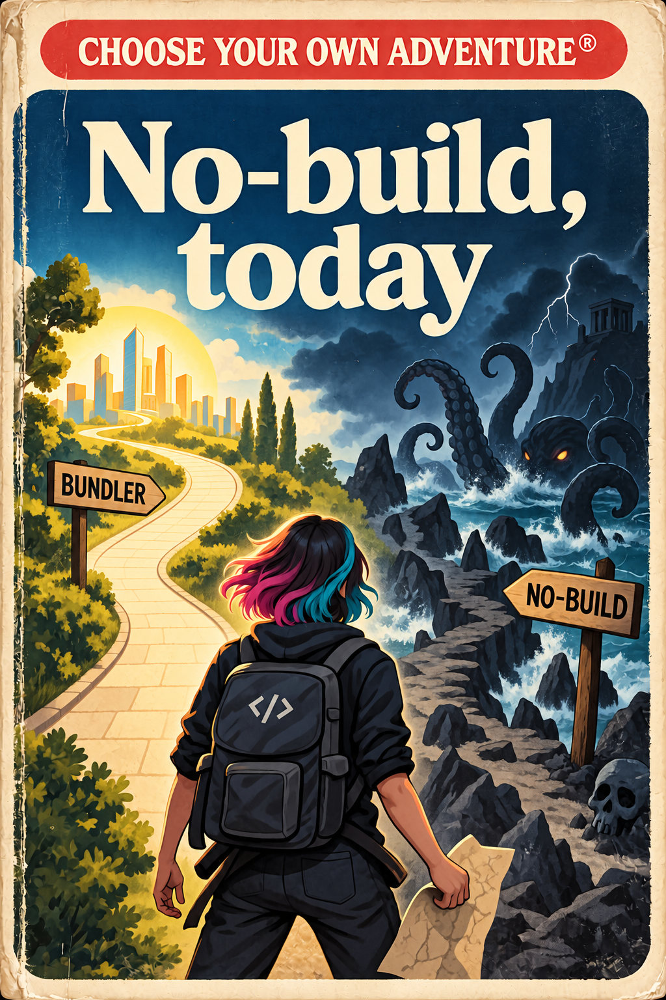
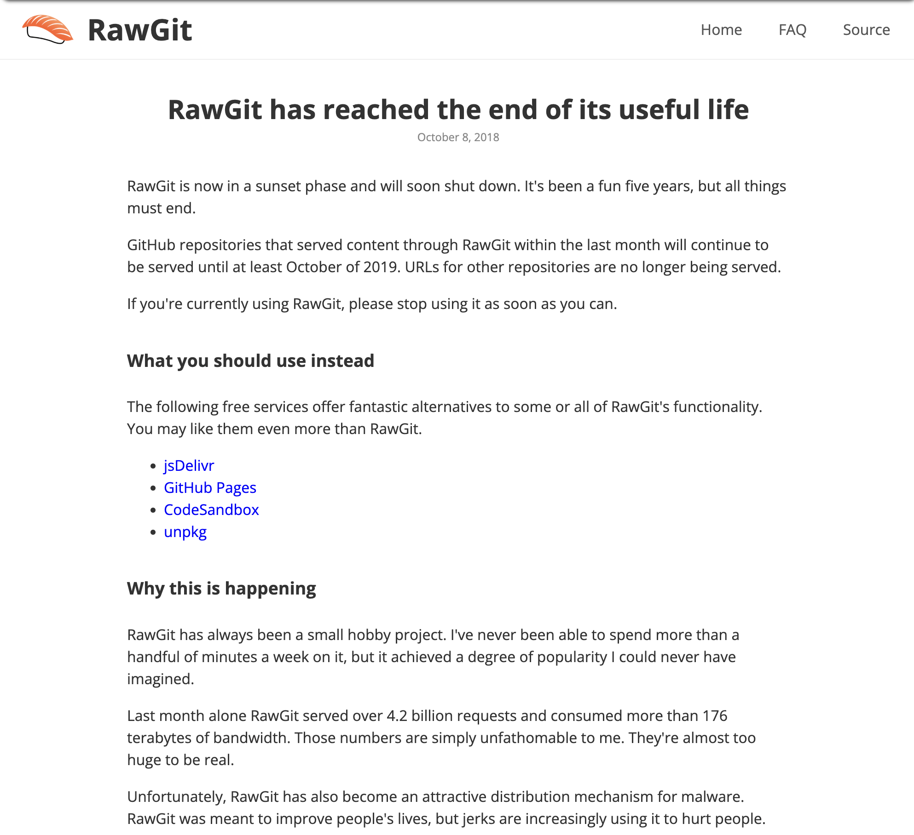
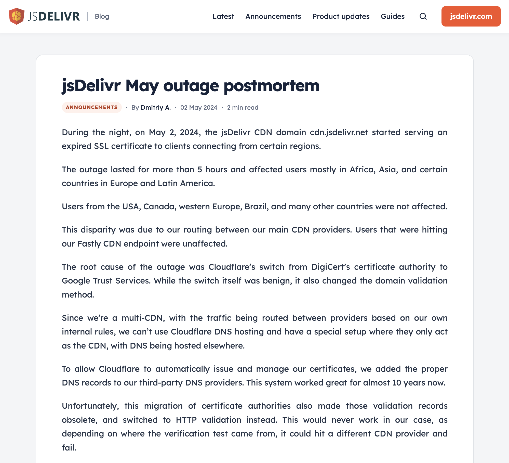

Raise your hand if you use a bundler.
This includes Vite, Webpack, esbuild, Rollup, Parcel, and more.
But it also includes bundlers that are built into frameworks, like Next.js or Nuxt.
Nearly all of us do, right?
But how many actually _like it_?
When I asked folks on Twitter and Mastodon, a pretty large percentage also didn’t.
State of JS
“What aspects of JS do you struggle with most?”

Many languages are compiled, what's the problem?
Fragmentation is the problem!
Oftentimes when discussing these issues, I get the question “but other languages are completely compiled, why is it a problem here?”.
Yes, but their compiler is **official** and always there.
You literally can’t use the language without it.
You don’t get a broken experience, you get _no experience_.
The problem is not compilation, it’s fragmentation.
“Recently, the build of a project I was working on broke
because the use of a perfectly valid CSS selector (::details-content::after)
caused Lightning CSS to blow up (despite this selector being supported by all browsers)”
The more complex bundlers become, the harder it is to maintain proper integration with the web platform.
Features that work fine in the browser, fail in bundlers.
A general API design principle is to prioritize the needs of consumers over the needs of producers.
The web platform itself has this as a design principle, called "Priority of constitutencies",
which says the needs of end-users should come before the needs of web developers,
which come before the needs of browser developers,
which come before the needs of standards authors.
Similar hierarchies exist in any project.
E.g. for an extensible library, the needs of plugin devs come before the needs of the library devs.
For a class, the needs of instances come before the needs of the class itself.
And so on.
The groups involved in defining, implementing, and using an API vary, but the core idea is to prioritize users over implementors at every level.
This both minimizes collective pain, and assigns the responsibility of dealing with complexity to the most technical group.
which is why another formulation of this principle is "put the pain on those who can bear it".
Why am I mentioning this right now?
Because when it comes to bundlers,
web developers are the consumers, and their needs should come before the needs of the bundler.
But the ubiquity and total dependence on bundlers has reversed the natural order:
now web developers must cater to bundlers, rather than the other way around.
This is a real commit from a library of web components.
We had to rewrite fetched URLs to a much more noisy syntax, so that bundlers would pick them up.
Once more, code that works perfectly fine in the browser had to be modified to satisfy the bundler.
import style from "./style.css" with { type: "css" }
class MyElement extends HTMLElement {
constructor () {
super();
this.attachShadow({ mode: "open" });
this.shadowRoot.adoptedStyleSheets.push(style)
}
}
In some cases, it gets to the extrme, with the web platform _itself_ adding features primarily to appease bundlers.
Now, CSS modules are great, don't get me wrong.
But they solve a problem we wouldn't have at all if bundlers weren't so crucial.
There is a common misconception.
The goal is not to get rid of bundlers.
It’s not a binary.
Complex use cases and large apps will _always_ need bundlers.
Bundlers will _always_ win on certain things.
The goal is to make them less essential, and lighter when they _are_ needed.
Meaning, we are currently here.
We are probably never going to reach the bottom right.
But any movement towards it is a win.
Dependency resolution
Making `import "foo"` work in the browser

So how can we do that?
Let's take a look at the core reasons we use build tools today.
They could be roughly categorized into three buckets:
- Transpiling one syntax to another
- Making things faster
- Resolving dependencies
Transpilation
TypeScript in the browser?
TSJS
Stage 1
Already in NodeJS
Stalled :(
TS compilation is one of the most common reasons for using build tools.
According to State of JS, more than 3/4 of deployed JS code is written in TypeScript.
This TC39 proposal for type annotations would let browsers natively parse a superset of TypeScript
and simply ignore types, treating them as comments.
Unfortunately, there has been resistance so the proposal has been stuck in Stage 1 for quite some time.
NodeJS shipped it however, which makes things a lot easier.
As with most standards proposals, if you want it implemented, make noise and ask for it!
Transpilation
CSS preprocessing
Vendor prefixes?
Mostly gone!
Interop 2027 proposal #1357Interop 2027 proposal #1343Interop 2027 proposal #1359
CSS preprocessing is a much brighter story.
- Variables and nesting alleviated a good chunk of the need for CSS preprocessors.
- Vendor prefixes are practically gone, people just use Autoprefixer out of habit at this point, and because they already have a CSS preprocessing pipeline in place.
- Abstraction is still a pain point: variables only afford very limited logic reuse.
- But mixins, functions, and inline conditionals are on the way, and will simplify things quite a lot.
- In fact, Interop 2027 is now open, and you should upvote their Interop proposals if you care about getting these features supported in all browsers.
Build tools will always make sense for transpilation
The goal is to make transpilation less necessary
Of course, the browser will never implement every possible custom syntax.
But remember: it doesn't have to be perfect to be worth it.
Even only addressing the common cases helps move down and left on the frequency vs. complexity graph.
Performance
### [103 Early Hints](https://developer.mozilla.org/en-US/docs/Web/HTTP/Reference/Status/103) { .start }
```http
103 Early Hint
Link: <https://cdn.example.com>; rel=preconnect,
<https://cdn.example.com>; rel=preconnect; crossorigin
```
There are a bunch of new performance-related features in modern browsers.
HTTP/2 and HTTP/3 make loading many little resources a lot more efficient.
Preloading, fetch priority hints, 103 early hints help the browser load important resources sooner.
And compression dictionary transport and improved compression algorithms like Brotli and Zstandard helps reduce the size of transferred resources.
A bundler will always win on performance
The goal is to close the gap
It's important to note however that no matter how much the ecosystem improves,
a bundler will *always* be ahead on performance, at least for the first load.
However, these features close the gap, for many apps to the point of diminishing returns.
And nothing prevents bundlers from utilizing them as well, for even _better_ results!
Dependency resolution
Making `import "foo"` work in the browser
^ One of these is not like the others
Do you notice that one of these is not like the others?
Performance and transpilation are generally _advanced concerns_.
You can get quite far without hitting them, especially in an SPA.
But using a dependency is not an advanced use case, it’s something you usually need very early on.
Even in a one-off experiment or a CodePen snippet you need dependencies!
API Design Principle
Incremental UI complexity for incremental use case complexity
Good user interfaces make simple things easy, complex things possible,
and ensure a smooth transition from simple use cases to more complex ones.
It is okay to need complex tools for complex needs
When a small increase in use case complexity results in disproportionate increase in UI complexity,
this is called a _usability cliff_ and it is an **antipattern**.
The way dependencies work in the web platform is a textbook usability cliff.
There is nothing wrong with bundlers when used as a performance optimization to minimize waterfall effects and overhead from too many HTTP requests.
You know, what a bundler is named after!
Or to provide a different DX, possibly optimized for specific use cases.
**It is okay to require advanced tools for advanced needs**,
and performance optimization is generally an advanced use case. Same for most other things bundlers and build tools are used for, such as strong typing, linting, or transpiling. All of these are needs that come much later than dependency management, both in a programmer’s learning journey, as well as in a project’s development lifecycle.
It is not okay to need
complex tools for basic needs
Abstraction is too
fundamental to be outsourced.
Abstraction is the cornerstone of software engineering.
Reusing logic and building higher-level solutions from lower-level building blocks is what makes all the technological wonders around us possible.
Imagine if every time anyone wrote a calculator they also had to reinvent floating-point arithmetic and string encoding!
And yet, the web platform has outsourced the most fundamental ecosystem functionality to third party tooling!
In healthy ecosystems dependencies are
normal,
cheap, and
first-class.
npm install marked
cargo add marked
pip install marked
gem install marked
dotnet add package marked
“Dependency-free” is not a badge of honor.
One of these is not like the others.
In NodeJS, you just npm install and reference specifiers straight away in your code.
Same in Python, with pip install.
Same in Rust with cargo add.
In healthy ecosystems you don’t ponder how or whether to use dependencies.
The ecosystem assumes dependencies are normal, cheap, and first-class.
You just install them, use them, and move on. “Dependency-free” is not a badge of honor.
## Dependencies in Node.JS
Take Node.js as an example.
You `npm install` your dependencies and they are ready to use.
That’s it.
Things Just Work™.
## Dependencies in the browser
```error
Uncaught TypeError: Failed to resolve module specifier "marked".
Relative references must start with either "/", "./", or "../".
```
But if we try to run the same JS file in the browser?
It has no clue where `marked` is supposed to come from.

Suddenly, everything becomes 10x more complex.
Picking the right tool, configuring it, understanding the new file structure.
What runs is no longer what you wrote or where you wrote it, so now you need additional abstractions to debug.
Dependencies sans bundlers, today?

So what’s the state of the art today when it comes to handling dependencies without bundlers?
And what can we hope for in the near future?
Put your seatbelts on, because here be dragons.
Vendoring dependencies is almost as old as the Web itself.
It’s what we did before modules and package managers:
you’d copy the library files into your project and include them with `<script>` tags.
If you didn’t follow the proper order, things would break.
Upgrading was a completely manual process.
And if two dependencies needed different versions of the same library?
Better sacrifice a goat to the gods.
I’m not gonna sugarcoat it — it sucked.
What if I just try rawdogging node_modules/ imports?
Ok, what if I cp specific packages out of it?
In an attempt to avoid bundling for simple projects,
some people today have tried using npm to manage dependencies
and then directly import from `node_modules/`
or copy specific packages out of it into a separate directory.
Manual vendoring, today?
Please don’t
```js { .delayed[2]:bad }
import { html, css, LitElement } from '/node_modules/lit/index.js';
```
```js { .delayed[2]:bad }
import { html, css, LitElement } from '/lib/lit/index.js';
```
```error { .delayed data-index="1" }
Uncaught (in promise) TypeError: Failed to resolve module specifier "@lit/reactive-element".
Relative references must start with either "/", "./", or "../".
```
There are many reasons this is a terrible idea.
Even when it works, the ergonomics are only slightly better than what we did 20 years ago.
But this completely breaks down the moment your dependency uses a dependency.
Even if you were willing to hunt down which packages use dependencies and vendor those too,
and keep up with every release in case that changes,
how would the packages even _reference_ them from the right location?
The packages don't know what your directory structure looks like.
In fact, there are [libraries](https://htmx.org/essays/vendoring/#:~:text=On%20the%20other,on%20and%20on.) that have committed to _not_ using dependencies so that their users can vendor them!
For a solution to work in production,
it must be able to handle transitive dependencies.
Your workflow cannot be risking collapse the moment you need to use a library that uses a library.
This rules out all URL-based solutions.
Unless of course you’re willing to rewrite the files you’re copying,
but now you’re effectively building your own bundler.
Please don't.
One of the biggest benefits we got from package mgmt was _specifiers_:
the ability to decouple the package being requested from details like its version, file path, or hosting location.
Specifiers are an abstraction over URLs.
Packages export specifiers and map them to actual file paths.
Consumers import dependencies via their specifiers, and the specifics are encapsulated.
The specifics of where a specifier points to can change, but consumer code doesn't need to.
That also meant packages could use dependencies without having to hardcode a specific file path for them that consumers must follow.
Specifiers should be non-negotiable.
Any dependency management system that forces you to write out paths manually,
whether that’s local vendoring or CDN URLs, should be a non-starter.
The cost-benefit is just not there.
## Centralized dependency management
```js { .bad }
// foo.js
import { marked } from
'https://esm.sh/marked@18.0.13/lib/marked.esm.js';
```
```js { .bad }
// bar.js
import { marked } from
'https://esm.sh/marked@17.0.6/lib/marked.esm.js';
```
```js { .good }
// Same version for the entire project
import { marked } from 'marked'
```
By abstracting the actual location of dependencies,
specifiers also enforce consistency throughout a codebase.
Multiple-versions of the same dependency _can_ co-exist, but it must be a
deliberate choice, rather than accidental drift.
Security & Reliability


At first, it seems like CDNs could be a great solution.
It’s quick and easy.
Nothing to install or configure!
Great, right?
No. Not great.
**It is always a bad idea to introduce a dependency on a whole other domain you do not control**, and an even worse one when linking to executable code.
First, there is the obvious security risk.
Unless you link to a specific version, down to the patch number and/or use [SRI](https://developer.mozilla.org/en-US/docs/Web/Security/Defenses/Subresource_Integrity), the resource could turn malicious overnight under your nose if the package is compromised.
And even if you do all this the entire CDN could get compromised.
Who remembers [polyfill.io](https://blog.qualys.com/vulnerabilities-threat-research/2024/06/28/polyfill-io-supply-chain-attack)?
But even attacks aside, any third-party domain is an unnecessary **additional point of failure**.
I still remember scrambling to change rawgit URLs when it sunset.
Or, that time when I had to change demos that depended on JSDelivr to use Unpkg 5 minutes before a talk because JSDelivr had an outage.
Low latency for local dev
The DX is also suboptimal.
You now must wait for a network roundtrip even when working locally, unless you pile more tooling on top.
Wanted to code on a flight?
Good luck.
Needed to show a live demo during a talk, over clogged conference wifi?
Maybe sacrifice a goat to the gods first.
Local dependencies
Abstraction isn’t just about using other people’s code
Modularizing your _own_ code is an essential part of good architecture.
Whatever workflow we pick must support local dependencies seamlessly.
This is another problem with CDN-based workflows.
But CDNs get you caching for free!
No, they don’t!
Oh my sweet summer child. I hate to be the one to break it to you, but no, you don’t, and that has been the case since about 2020.
Double keyed caching obliterated this advantage.
The upcoming Cross-Origin Storage may bring some of the benefits back, but right now that’s a non-benefit.
Import maps are not the solution, but they are an essential part of it.
They give us specifiers in the browser, allowing us to map module names to whatever URLs we want,
local, remote, whatever.
From there on, as with many things in life, the specific pros and cons depend on how you use them.
But wait a second, look at this code.
It’s a JSON island ...in HTML!
Now we need build tools to include this code on every HTML page??
## External import maps
Yo dawg, I herd u like no-build
So I put a build step in ur no-build
so u can build while you don't build
- Future: `<script type="importmap" src="importmap.js">`
- `<script src="importmap.js">` injection script { .ok }
- Speculative: `Link`-like HTTP header? { .best }
{ .check-list .delayed-children }
That's kind of a non-starter, isn't it?
And no, you can't just use a `src` attribute, yet.
But thankfully, injecting them through a script works, so disaster averted.
In the future we may not need HTML at all.
There are discussions around potentially using HTTP headers to deliver either the import map content or a URL to it.
Yo dawg, I herd u like deps
So I put the deps of ur deps in ur import maps
so u can import while importing
Transitive dependencies also work, as long as we include them too.
So you can't really skip the build tool.
But that’s okay, because lighter build tools are still an improvement!
JSPM: Watch source → generate `importmap.js` with CDN links to deps used
- CDNs + `node_modules/` for localhost
- SRI support
- Very CDN-dependent { .bad .delayed }
- Must still run a watcher { .bad .delayed }
{ .check-list }
JSPM was groundbreaking.
It made import maps actually usable.
The idea is it watches your source files and generates an import map injector script with only the dependencies you actually use.
As to where the dependencies live, its philosophy is you link to `node_modules` locally and use CDNs for production,
which it makes as safe as possible via SRI.
It’s still a build tool, but a lighter kind of build tool.
Your source files remain intact, the watcher just reads them to generate the import map.
But I kept hitting the same wall: I didn’t want to depend on CDNs in production, for all the reasons I mentioned earlier.
And having to still remember to run a script whenever I make edits was friction I'd rather do without.
So I wrote my own …_unbundler_
Nudeps: Regenerate when deps change via npm `dependencies` hook
Launching today at dotJS!
- Import map generation + local vendoring
- CDN-like granular cache busting
- No watcher, install and forget
- Uses JSPM under the hood ❤️
- Still something to install :( { .bad }
{ .check-list }
So, as one does, I wrote my own …_unbundler_ if you may.
## Are we there yet?
- Big gap around **non-JS assets** (CSS, icons, fonts, etc) [(`specifier:` URLs?)](https://github.com/whatwg/html/issues/12163){.delayed}
- No **multiple import maps** in Firefox [(Interop 2027 proposal #1399)](https://github.com/web-platform-tests/interop/issues/1399){.delayed}
- No import maps in **workers** [(whatwg/html#10858)](https://github.com/whatwg/html/pull/10858){.delayed}
- Some packages still written assuming NodeJS internals
{ .x-list }
It doesn’t have to be perfect to be worth it.
But won’t Claude get confused?
No, it won't!
## Give your agents a little more credit yo
Claude was able to figure things out pretty easily, with minor recoverable mistakes.
Once I added a `SKILL.md`, even the minor mistakes were gone.
No, we are not doomed to repeat the same patterns forever because LLMs have been trained on them.
We’re still nowhere near the bottom left,
but we're definitely moving that way, and that’s a win for the ecosystem as a whole,
bundler or no bundler.